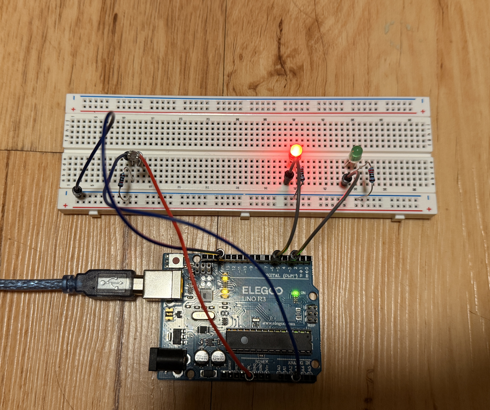
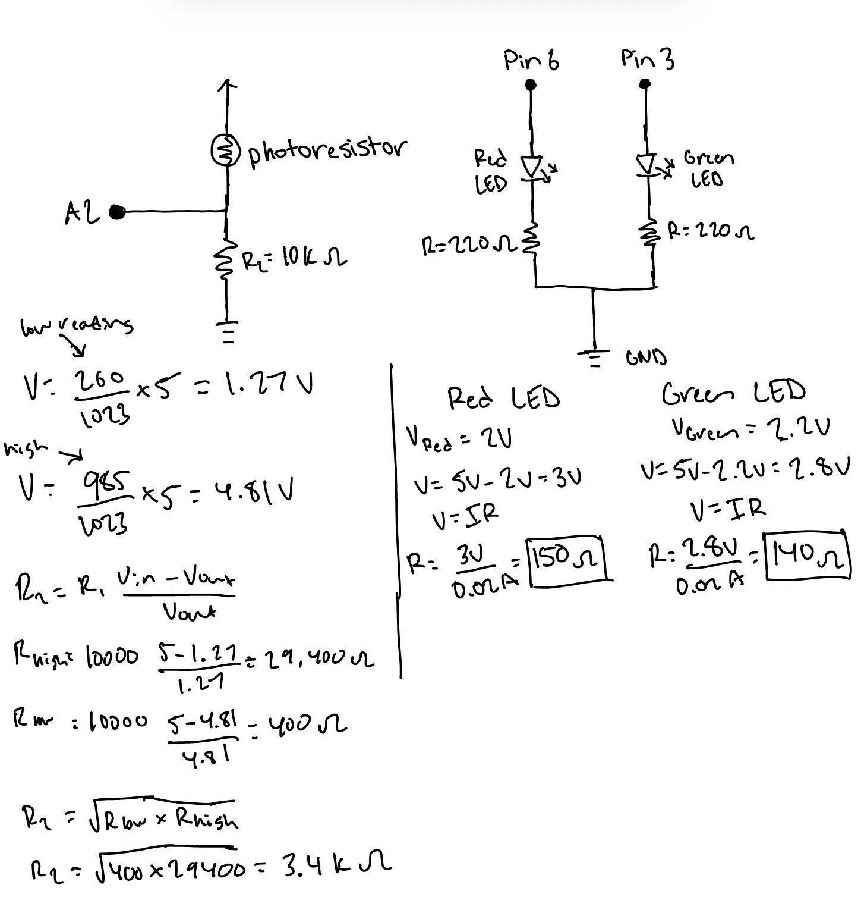
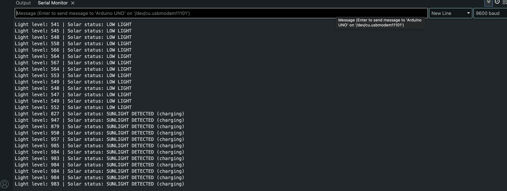
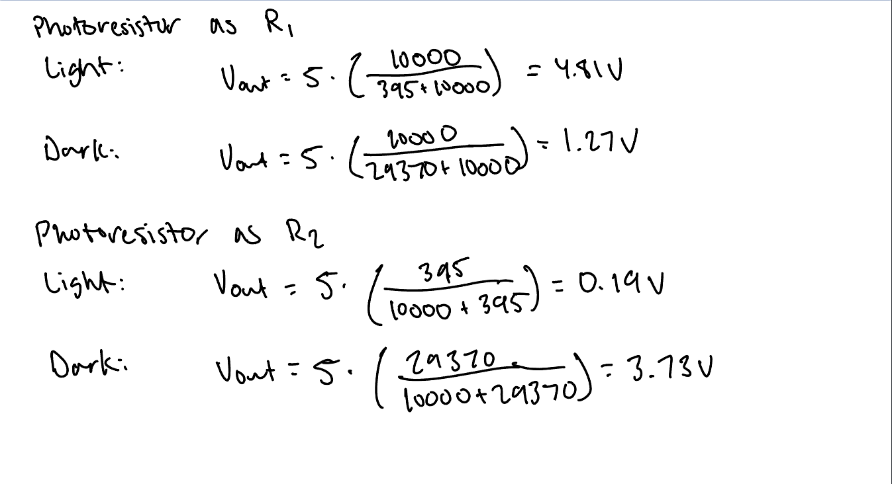
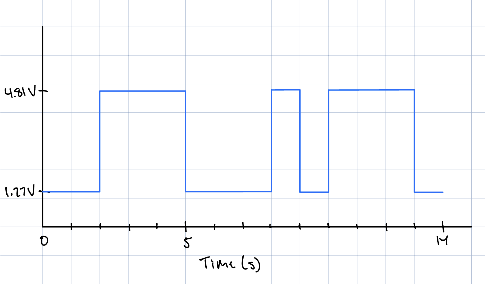

For this Assignment, I created a smart home product that monitors whether the solar panels in your home are charging and getting sufficient sunlight. When the solar panels are charging and receiving adequate light, the green LED lights stays on. And if there is insufficient sunlight, a red LED turns on.

// define the analog input pin connected to the photoresistor
const int photoresistorPin = A2;
// define pin connected to the red LED
const int redLed = 6;
// define pin connected to the green LED
const int greenLed = 3;
// store the lowest sensor reading measured during calibration (covering the sensor)
const int sensorMin = 260;
// store the highest sensor reading measured during calibration (no flashlight, just natural room light)
const int sensorMax = 985;
// calculate the midpoint of the calibrated sensor range
const int midpoint = (sensorMin + sensorMax) / 2;
// store the current photoresistor reading
int sensorValue = 0;
// store the calculated green LED brightness
int greenValue = 0;
// store the calculated red LED brightness
int redValue = 0;
void setup() {
// initialize serial communications at 9600 bps:
Serial.begin(9600);
// set red LED as an output
pinMode(redLed, OUTPUT);
// set green LED as an output
pinMode(greenLed, OUTPUT);
}
void loop() {
// read the analog in value:
sensorValue = analogRead(photoresistorPin);
// map the sensor reading from the calibrated light range to the green LED value (from 0 to 255)
greenValue = map(sensorValue, sensorMin, sensorMax, 0, 255);
// check whether sufficient light is detected.
if (sensorValue > midpoint) {
// turn off the red LED when there is sufficient light
analogWrite(redLed, 0);
// set green LED brightness according to the detected light level
analogWrite(greenLed, greenValue);
} else {
// turn on the red LED when insufficient light is detected.
analogWrite(redLed, 255);
// turn off the green LED when insufficient light is detected.
analogWrite(greenLed, 0);
}
// print the sensor reading label to the serial monitor
Serial.print("Light level: ");
// display the raw sensor reading
Serial.print(sensorValue);
// print the current solar status label
Serial.print(" | Solar status: ");
// report whether the system detects sufficient light
if (sensorValue > midpoint) {
// print "SUNLIGHT DETECTED" if there is sufficient light
Serial.println("SUNLIGHT DETECTED (charging)");
} else {
// print "LOW LIGHT" if there is sufficient light
Serial.println("LOW LIGHT");
}
// Wait 200 ms
delay(200);
}

The variable resistor can be either R1 or R2. If the variable resistor became R2, it would just cause the output voltage to decrease as more light gets shined on the photoresistor and to increase the darker it gets. This is because the photoresistor's resistance decreases with more light and increases in darker conditions.


This would change the map() code because we would now want an output range between 0-1023 for a 10-bit PWM and input readings between 0-65535 for a 16-bit converter.
10-bit: (2^10) - 1 = 1023
16-bit converter: (2^16) - 1 = 65535
I do define sensorMin and sensorMax in my code to reflect my lowest and highest readings, so I would probably need to measure them again using the 16 bit converter.
My updated map() code would then be:
greenValue = map(sensorValue, sensorMin, sensorMax, 0, 1023);